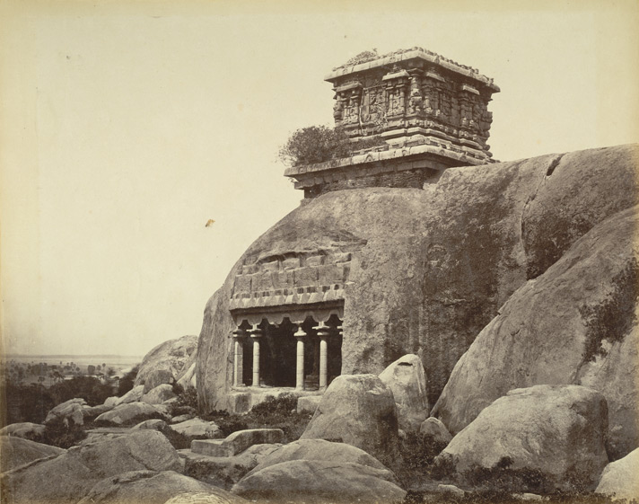

<section>
    <h2 hidden aria-hidden="false">Oldest Lighthouse in India</h2>
    <figure>
        <div class="half left" style="margin-top:10%">
            <h3>Oldest Lighthouse in India</h3>
            Olakkannesvara temple
            <br>
            ("flame eye")
            <br><br>
            Built in the 8th century in Tamil Nadu
            <br><br>
            Lighthouses <span class="highlight">warn sailors of danger</span> in nearby waters
        </div>

        <div class="half right">
            <a href="">
                
            </a>
        </div>

        <figcaption>
            <p>

            </p>

        </figcaption>
    </figure>
</section>